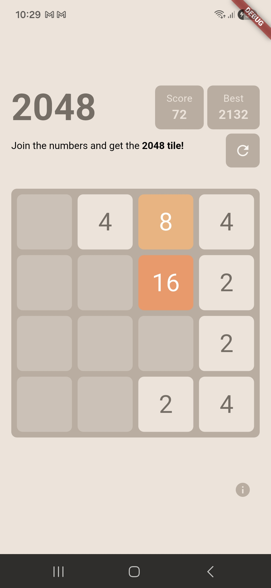

Classic Tetris clone built with vanilla JavaScript featuring responsive controls, scoring and game-over state management.


⚡ Real-Time Forum. A fast, lightweight discussion platform built with Go and a modern single-page application frontend. This project brings together classic forum functionality and real-time communication in one seamless experience. Users can create posts, participate in threads, and chat instantly — without page reloads or delays. Everything runs in a smooth SPA environment inspired by modern applications like Gmail: navigation is instant, state is preserved, and interactions feel fluid.

A mobile implementation of the popular 2048 puzzle game built with Flutter. Includes animated tile movements, score management, local data persistence, and a clean, maintainable architecture focused on performance and user experience.